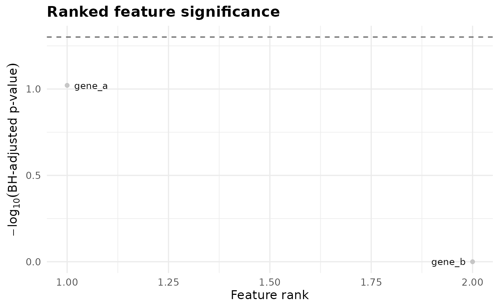

This function visualizes all features from runFishers() ranked by
BH-adjusted p-value and explicitly highlights those that pass the
significance threshold. Optionally, the top N most significant features
can be labeled.
plotFishers(fisher_df, alpha = 0.05, label_top_n = 5)A data frame returned by runFishers() containing
at minimum the columns:
gene
adj_p_value
sig_after_bh
BH-adjusted significance threshold. Default is 0.05.
Number of top-ranked features to label. Default is 5. Set to 0 to disable labeling.
A ggplot2 object.
Each point represents a feature. Color explicitly encodes whether a feature passes the BH threshold. Labels are applied only to the top-ranked features to preserve clarity.
long <- tibble::tibble(
genome_id = rep(paste0("g", 1:10), each = 2),
feature_id = rep(c("gene_a", "gene_b"), 10),
value = c(
1, 0, 1, 0, 1, 1, 1, 1, 0, 1,
0, 0, 0, 1, 0, 1, 0, 1, 0, 0
),
genome_drug.resistant_phenotype = rep(
rep(c("Resistant", "Susceptible"), each = 5),
each = 2
)
)
tmp <- tempfile(fileext = ".parquet")
arrow::write_parquet(long, tmp)
fisher_results <- runFishers(tmp, Q = 0.05)
plotFishers(fisher_results, alpha = 0.05, label_top_n = 2)
